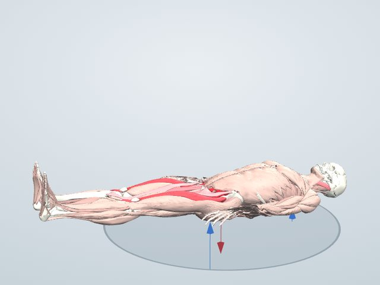

トレーニング図鑑
レッグレイズ
あお向けで脚を持ち上げる種目です。股関節を曲げる腸腰筋と大腿直筋、骨盤を安定させる腹直筋が働きます。
一般に鍛えられる筋: 腸腰筋・大腿直筋・腹直筋

鍛えられる筋のしくみ
脚を持ち上げる動きは、股関節の前にある腸腰筋(大腰筋と腸骨筋)と、太ももの前の大腿直筋が主に行います。腹直筋は、脚の重さで骨盤が前に傾いて腰が反らないように、骨盤を支える役目をします。腸腰筋は背骨と太ももの骨をつなぐ深い筋で、歩くときに脚を前に振り出す働きもあります。
働く筋(3Dモデルでの計算)
自分の体重だけで、体重60kgの人がゆっくり動かしたときに、それぞれの筋が出せる最大の力に対して何%の力を出すかの推定です。
- 大腰筋縮みながら33%
- 腸骨筋縮みながら31%
- 大腿直筋縮みながら25%
- 胸鎖乳突筋長さを保って16%
- 長内転筋縮みながら15%
- 短内転筋縮みながら14%
- 縫工筋縮みながら9%
- 恥骨筋縮みながら8%
「縮みながら」は持ち上げるときに縮んで力を出す筋、「伸びながら」は伸ばされながら力を出す筋、「長さを保って」は姿勢を支える筋です。バーは筋力の50%でいっぱいになります。
やり方
- あお向けに寝て、脚をそろえて伸ばす
- 膝を伸ばしたまま、脚を天井に向けて持ち上げる
- 脚が床と垂直になったら、ゆっくり下ろす
- 床につく直前で止めて、また上げる
ポイント
- 腰が床から浮かないよう、おなかに力を入れる
- 下ろすときほどゆっくり動かす
よくある間違い
- 腰が反って浮き、腰に負担がかかる
- 勢いで脚を振り上げる
回数と重さの目安
10〜15回を2〜3セット。下ろすときは、かかとが床につく手前で止めて、次の回に入ります。
やさしくする方法
膝を曲げて行う。片脚ずつ上げる。
きつくする方法
ゆっくり下ろす。鉄棒にぶら下がって行う「ハンギングレッグレイズ」にする。
注意すること
腰が床から浮いて反ると、腰に負担がかかります。腰痛がある人は膝を曲げた形から始めてください。
同じ部位の種目


学習用の推定です。筋の働きは体格ややり方で変わり、実際の筋電図とは異なることがあります。痛みがあるときは無理をせず、専門家に相談してください。